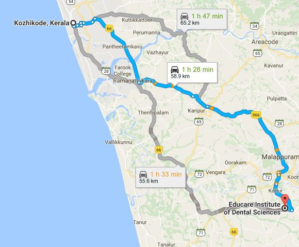

ADDRESS:
Educare Institute of Dental Sciences,
Kiliymannil Campus,
College Road,
Chattiparamba,
Malappuram

Educare Institute of Dental Sciences,
Kiliymannil Campus,
College Road,
Chattiparamba,
Malappuram
Educare Institute of Dental Sciences is managed by Educare Charitable Trust. It is on kottackal Perinthalmanna road 19 Km from Perinthalmanna and 10 Km from Kottackal.
It is in 59 Km South of Calicut
Prayer meeting:Don't have prayer meeting or contacts
How to reach:Catch Kuttipuram bus from New bus stand and get down at kottackal. Catch perinthalmanna bus from there and get down at college padi bus stop.
Possibility:MES Medical College and Kottackal Ayurvedha college can reach out to here and build contacts